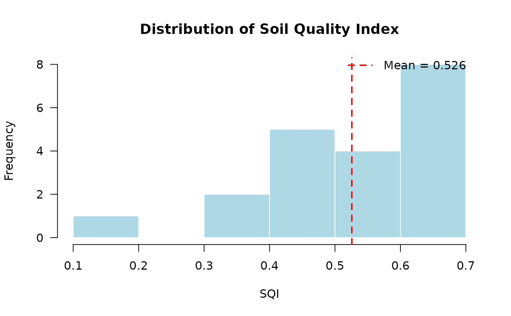
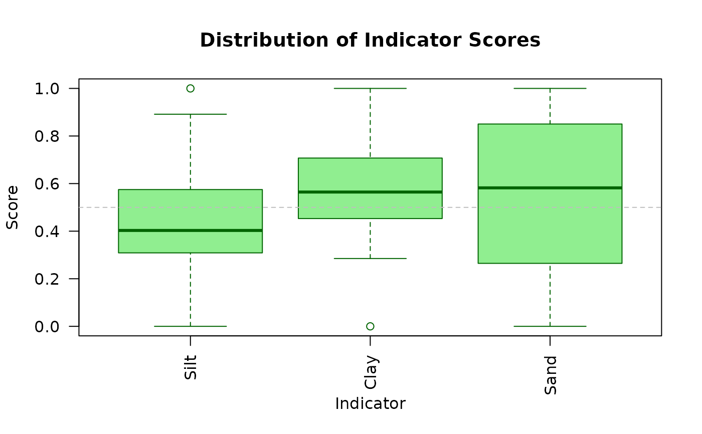
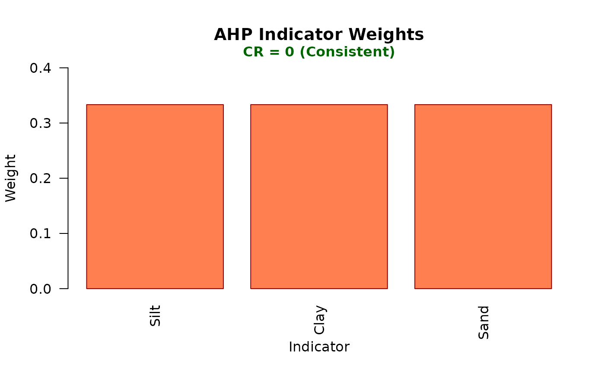
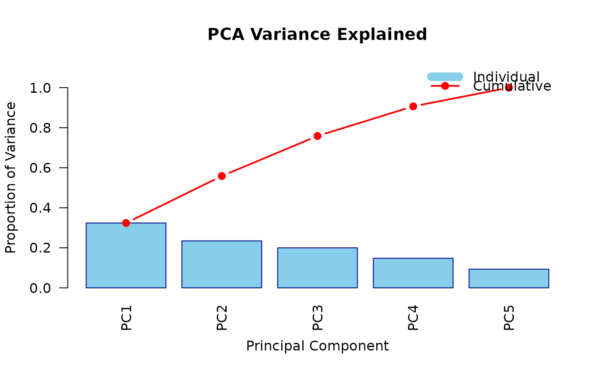
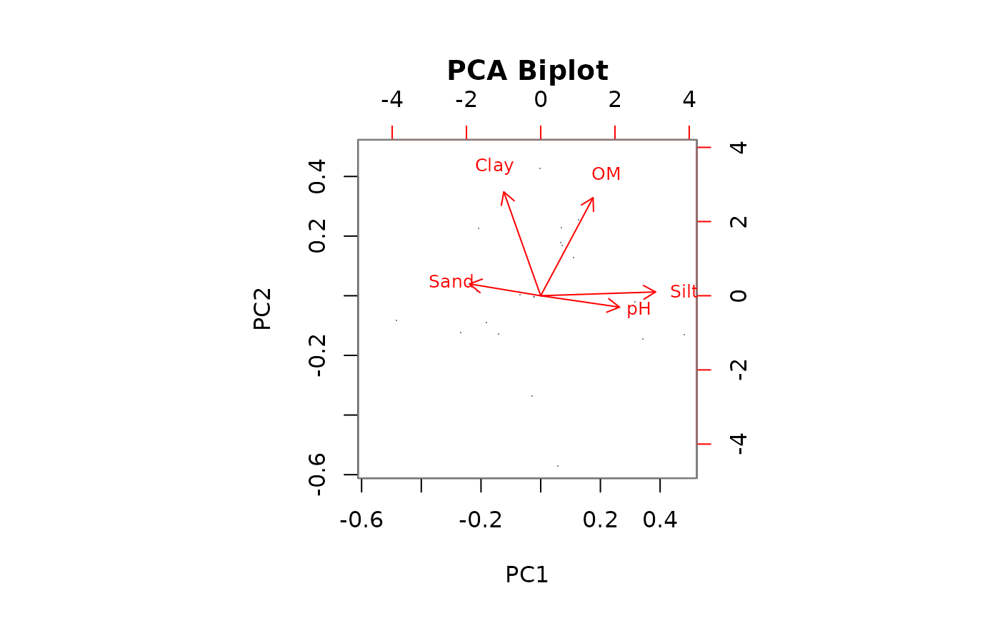

S3 plot method for sqi_result objects. Provides multiple visualization types to explore and communicate Soil Quality Index results and analysis components.
Arguments
- x
An object of class "sqi_result" returned by
compute_sqi,compute_sqi_df, orcompute_sqi_properties.- type
Character string specifying the plot type. Options are:
- "distribution"
Histogram of SQI values with mean line
- "indicators"
Boxplots of indicator scores
- "weights"
Bar chart of AHP weights with CR annotation
- "scree"
Variance explained by PCs with cumulative line
- "biplot"
PCA biplot of observations and variables
- ...
Additional graphical parameters passed to plotting functions.
Details
The function creates different visualizations based on the type
parameter:
Distribution Plot: Shows the distribution of SQI values across all samples using a histogram. A vertical line indicates the mean SQI.
Indicators Plot: Displays boxplots for each scored indicator, allowing comparison of score distributions across different soil properties.
Weights Plot: Shows the AHP weights assigned to each indicator as a bar chart. The Consistency Ratio (CR) is annotated on the plot.
Scree Plot: Displays the proportion of variance explained by each principal component, with both individual (bars) and cumulative (line) variance shown.
Biplot: Creates a PCA biplot showing both observations (points) and variable loadings (arrows), useful for understanding relationships between samples and soil properties.
See also
plot_sqi_report for multi-panel visualization,
compute_sqi, compute_sqi_df,
compute_sqi_properties
Examples
# Create example data
soil_data <- data.frame(
SampleID = paste0("S", 1:20),
Sand = rnorm(20, 45, 10),
Silt = rnorm(20, 30, 5),
Clay = rnorm(20, 25, 5),
pH = rnorm(20, 6.5, 0.5),
OM = rnorm(20, 3, 0.5)
)
# Compute SQI
result <- compute_sqi_df(soil_data, id_column = "SampleID")
# Distribution plot
plot(result, type = "distribution")

# Indicators plot
plot(result, type = "indicators")

# Weights plot
plot(result, type = "weights")

# Scree plot
plot(result, type = "scree")

# Biplot
plot(result, type = "biplot")
